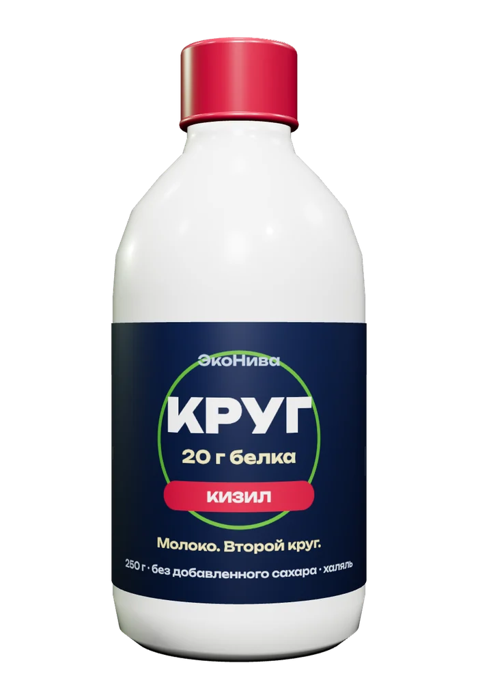
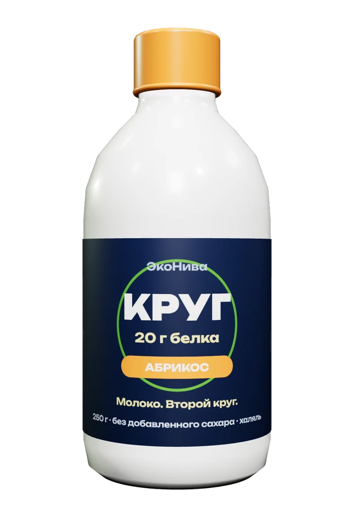
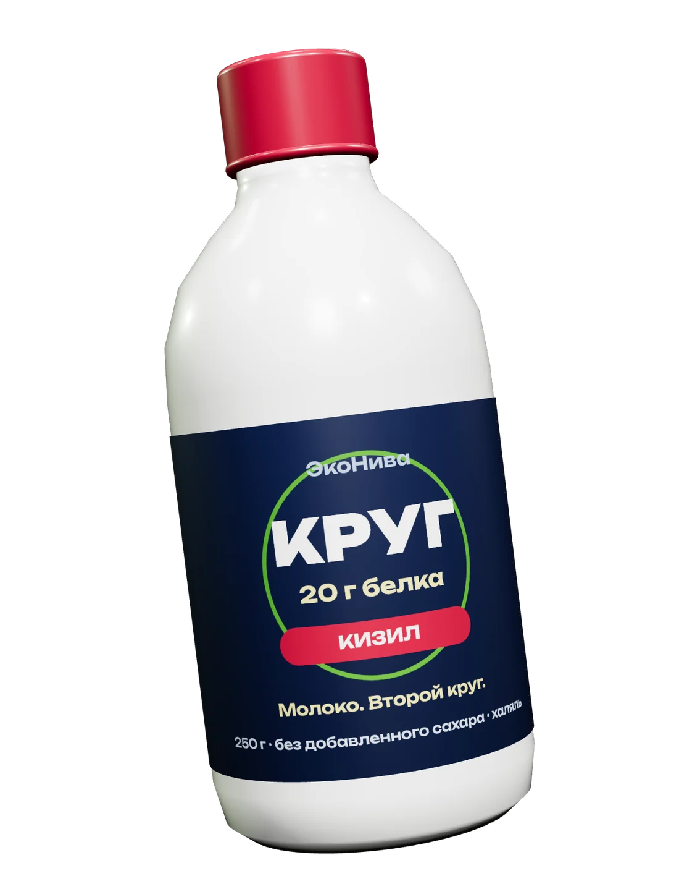
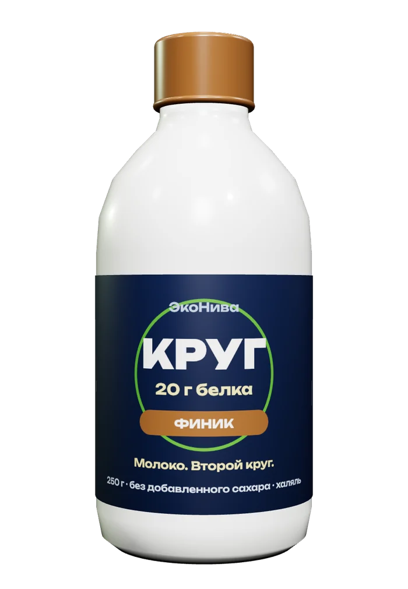
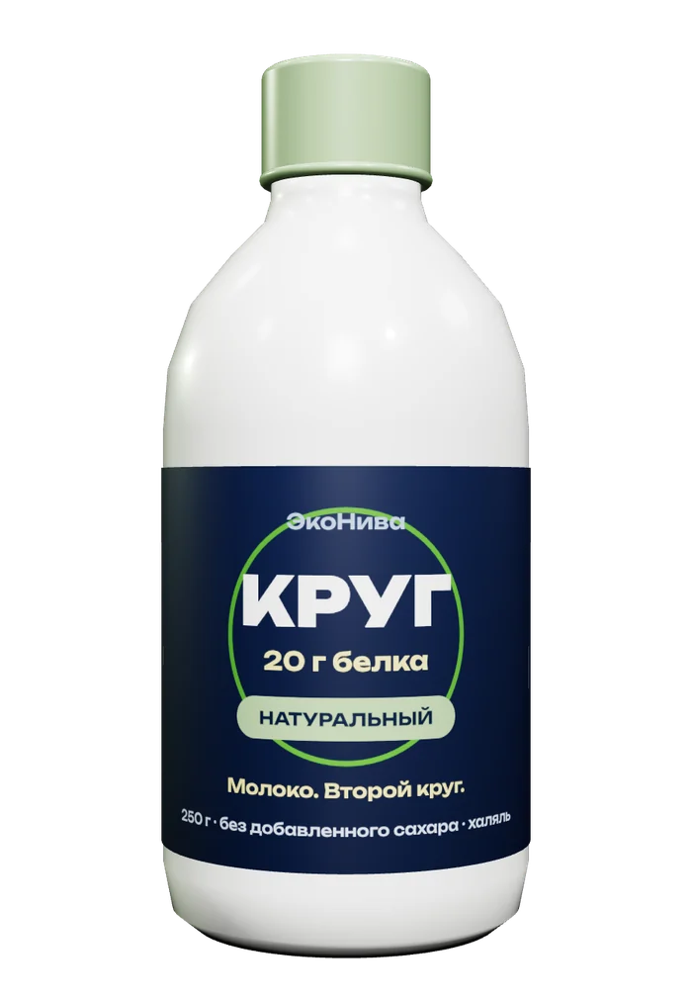
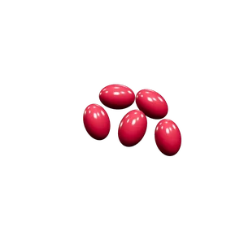
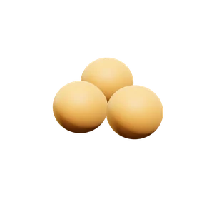
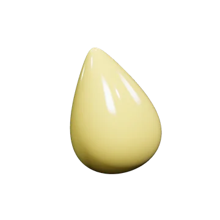
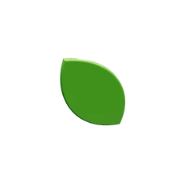
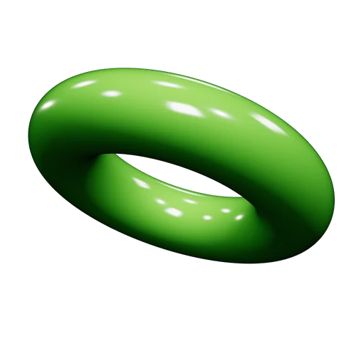
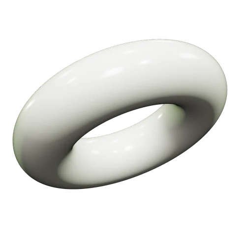
Белковый напиток из творожной сыворотки
Молоко.
Второй круг.
- 20 г белка
- 0 г добавленного сахара
- халяль
Почему КРУГ
Когда делают творог, остаётся кислая сыворотка. Её трудно переработать, и чаще всего она уходит в отходы.
напитка — сыворотка, остальное молочная основа и фрукты
творожной сыворотки в каждой бутылке 250 г
сыворотки в год уйдёт в напиток, а не в сток, когда продажи дойдут до 4,7 млн бутылок (план третьего года, 2029)
Замыкаем цепочку
Молоко проходит
второй круг
Поле кормит ферму.
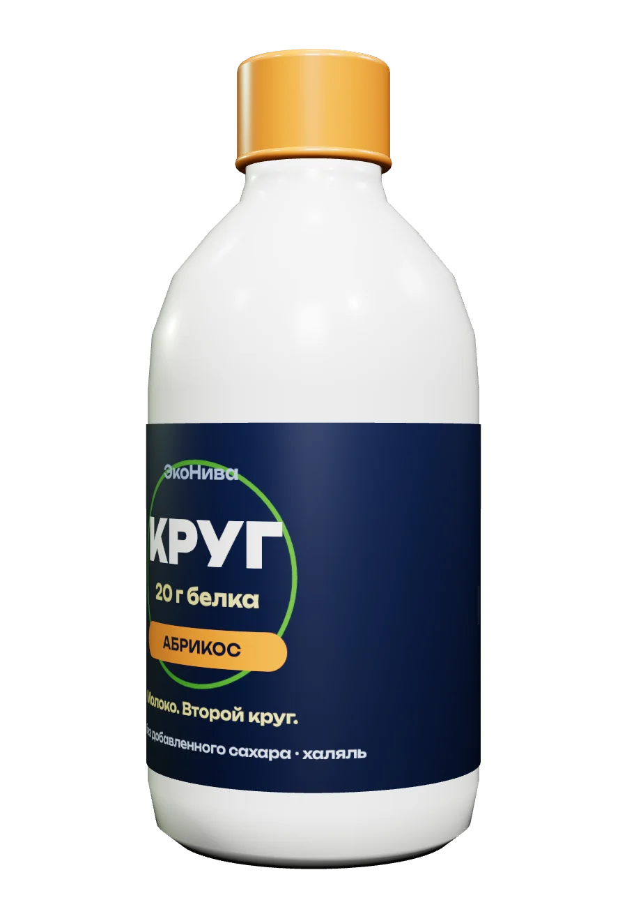
Путь этой бутылки
От фермы до полки в Грозном
- 01
Ферма «ЭкоНиваАгро»
Молоко едет на завод не дольше 1,5 часа — так требует задание кейса.
≤ 1,5 ч - 02
Творог на Аннинском заводе
Воронежская область. Творог здесь уже делают, а кислая сыворотка остаётся после него.
сырьё рядом - 03
Сыворотку осветляют и пастеризуют
Отдельно готовят основу: обезжиренное молоко, сывороточный белок КСБ‑80 и живые культуры.
2 потока - 04
Смешивание
После сквашивания основу соединяют с сывороткой и фруктовой начинкой на существующей линии.
без новой дорогой линии - 05
Розлив и холод
Белая бутылка с переработанным пластиком (rPET), хранение при +2…+6 °C, срок 30 суток.
+2…+6 °C - 06
Рефрижератор в Грозный
Около 1 300 км и примерно двое суток в пути до дистрибьютора.
~1 300 км - 07
На полке в Грозном
Магазины, спортзалы и маркетплейсы. Пилот стартует в конце января 2027, к Рамадану.
139 ₽
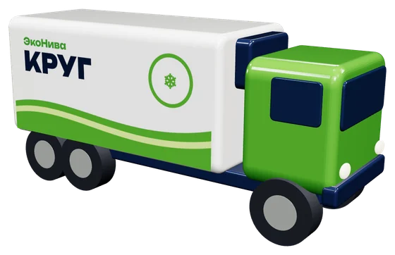
0 км
Честный состав
250 г, из них 150 г — то, что раньше выливали
Эко-эффект в цифрах
Около 0 г CO₂e экономии на бутылку
Базовый расчёт команды по формуле М − Б + П − Т: что сэкономили на молоке, минус белок, плюс переработанный пластик, минус доставка.
Мы проверили расчёт тремя методами: от +162 г в верхнем сценарии до −127 г по самому строгому (IDF, по сухому веществу). Поэтому на бутылку выносим не CO₂, а то, что верно при любом методе: сыворотка идёт в напиток, а не в сток.
Четыре вкуса
Нажми на бутылку — встряхни
139 ₽ на полке.
Пилот в Грозном — 2027.
Команда
- Галаматов Ахмад
- Тайдаев Абубакар
- Мунаев Магомед‑Эмин
- Амхадов Халид